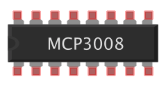

Cuando incide la luz la resistencia es BAJA y cuando hay oscuridad la resistencia es muy ALTA

#!/usr/bin/env python3
from gpiozero import LightSensor
ldr = LightSensor(4)
while True:
print(ldr.value)
#!/usr/bin/env python3
from gpiozero import Buzzer
from time import sleep
buzzer = Buzzer(20)
while True:
buzzer.on()
sleep(1)
buzzer.off()
sleep(1)
# También existe buzzer.beep()
#!/usr/bin/env python3
from gpiozero import LightSensor, Buzzer
from time import sleep
ldr = LightSensor(4)
buzzer = Buzzer(20)
while True:
sleep(0.1)
if ldr.value < 0.5: # Medir límites y ajustar valor
buzzer.on()
else:
buzzer.off()
Los pins GPIO de la Raspberry Pi son digitales. Entrada o salida a 0 (LOW) ó 1 (HIGH).
Mediante un chip ADC (conversor analógico digital) se pueden leer valores analógicos (temperatura, humedad, potenciómetros)
 https://www.raspberrypi.org/learning/physical-computing-with-python/analogue/